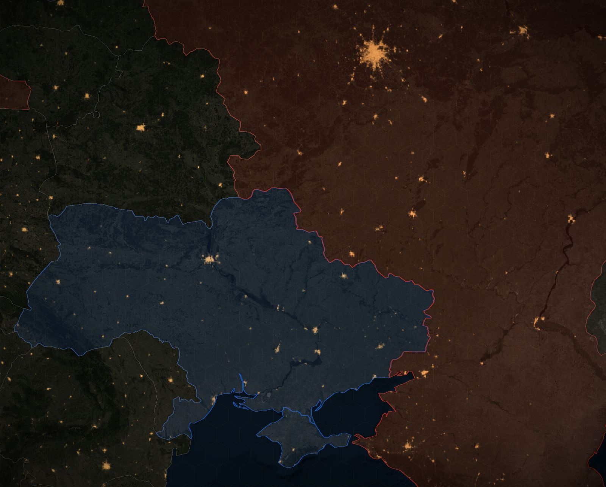

Where the war in Ukraine goes next
Watch the front move from February 2022 to today on a 3D map, then simulate the next year. Set the aid, the strikes, the offensives and the talks, and see where the line ends up.
How this works
The model is printed here once the page has loaded.
The past wars on this board, and their sources
- The invasion and the battle for Kyiv 2022-02-24 to 2022-04-02
Russia attacked from Belarus, Russia and Crimea at once, aiming at Kyiv. Its northern columns stalled and withdrew by early April, while it held large areas in the east and south.
- The siege of Mariupol 2022-02-24 to 2022-05-20
Russian forces encircled the Azov port of Mariupol and levelled much of it. The last defenders held out in the Azovstal steel works.
- The Kharkiv counteroffensive 2022-09-06 to 2022-10-02
Ukraine broke through thin Russian lines east of Kharkiv and raced to the Oskil river. Izium and then Lyman fell back into Ukrainian hands.
- The Kherson counteroffensive and the first energy war 2022-08-29 to 2022-11-11
Ukraine ground down Russian forces on the right bank of the Dnipro by cutting their bridges. Russia answered with its first mass missile strikes on Ukraine's power grid.
- The battle of Bakhmut 2022-08-01 to 2023-05-20
The Wagner group threw tens of thousands of fighters, many of them convicts, at Bakhmut for ten months. Ukraine defended the ruined town to bleed Russian forces.
- The 2023 counteroffensive 2023-06-04 to 2023-12-01
Ukraine attacked Russia's prepared lines in Zaporizhzhia with Western armour and ran into deep minefields. It freed a string of villages up to Robotyne but never reached the second line.
- The battle of Avdiivka 2023-10-10 to 2024-02-17
Russia massed over 120,000 troops against the fortified town on Donetsk's edge. Ukraine, short of shells, pulled out after four months.
- The Kursk incursion 2024-08-06 to 2025-03-31
Ukraine crossed into Russia's Kursk oblast and took Sudzha, the first ground offensive into Russia of the war. Russia, later helped by North Korean troops, pushed it back over seven months.
- Operation Spiderweb 2025-06-01 to 2025-06-01
Ukraine's SBU smuggled 117 small drones deep into Russia in trucks and launched them at five bomber bases at once. It was the largest single blow to Russia's long-range bomber force.
- The Pokrovsk offensive 2024-07-19 to 2026-02-25
After Avdiivka Russia drove west for the road and rail hub of Pokrovsk, taking Kurakhove, Vuhledar and Velyka Novosilka on the way. It took a year and a half and the heaviest losses of the war.
- 2026: the stalled offensive, the counterattacks and the energy war 2026-01-01 to 2026-10-31
Russia's ground gains slowed to a crawl after it lost Starlink in February, and Ukraine retook ground near Pokrovsk and Lyman. The air war grew on both sides: Russia shifted to jet drones against cities and trains, Ukraine hit refineries, ports and Moscow.
The experts who brief you, and what they published
- Institute for the Study of War Washington think tank that maps the front every day
Russia is attacking hard but gaining little, and its claims of captures are often an information campaign. Source
- Michael Kofman Senior fellow, Carnegie Endowment
Ukraine holds the ground war, but this winter is about surviving Russia's drone campaign, and no real deal comes before spring. Source
- Rob Lee Senior fellow, Foreign Policy Research Institute
Ukraine has pulled ahead in the tactical drone war, so Russia's infantry-heavy tactics are stalling. Source
- Jack Watling Senior research fellow for land warfare, RUSI
Ukraine's battlefield gains have turned the tide, so Russia hits cities harder to compensate. Source
- CSIS (Seth Jones and Riley McCabe) Washington think tank; casualty estimates
Russia is paying the highest price of any major power since 1945, and the exchange ratio has swung further against it in 2026. Source
- Ben Hodges Retired lieutenant general, former commander of US Army Europe
The war has turned in Ukraine's favour, and Washington is deliberately weakening Kyiv to force it to give up land. Source
- Mick Ryan Retired major general, Australian Army; Lowy Institute
Russia is weakened but will keep pushing for Donbas and try to win through Washington what it cannot win in the field. Source
- Phillips O'Brien Professor of strategic studies, University of St Andrews
Ukraine has taken the initiative in 2026, above all in long-range strikes that are breaking Putin's promise of normal life. Source
- John Mearsheimer Professor of political science, University of Chicago (realist school)
Russia is winning a war of attrition and diplomacy cannot end it, so a longer war only weakens Ukraine. Source
- Kiel Institute, Ukraine Support Tracker German institute that counts every pledge of aid to Ukraine
Europe now carries Ukraine's funding, but its military aid still leans on American weapons. Source
- Russia economy analysts (Bloomberg reporting) Bloomberg reporting on Russia's budget, with Meduza and The Moscow Times
War spending is straining Russia's budget and stalling its economy, but not yet forcing Putin to stop. Source
- Valerii Zaluzhnyi Former commander-in-chief of Ukraine's armed forces, now ambassador to Britain
Drones have turned the front into a robotic kill zone where neither side can break through, so soldiers' lives are the scarcest resource. Source
- Oleksandr Syrskyi Commander-in-chief of Ukraine's armed forces until July 2026
Ukraine has stabilised the front and broken Russia's ability to advance by killing troops faster than Russia can replace them (Ukrainian official claims). Source
Everything on the board comes from published reporting and analysis, each with its page. The experts' numbers are my reading of what each one published, not their words. This is a model to think with, not a forecast. Something wrong? Say it in the discussion below and I check it. Satellite imagery: NASA. Elevation: AWS Terrain Tiles.
Where does the front line stand a year from now?
Say it where other readers can answer you. Opinions, videos and corrections about this simulator are all in one place.
Discussion
Where the war in Ukraine goes next
Your read of how it goes, a move I left out, an expert who belongs in the room, or a number I have wrong. Bring the source if you have one. What readers post is their words, not mine. My answers carry the Host tag.
Leave out anything private about anyone. The rules, what your account keeps, and what readers have changed so far